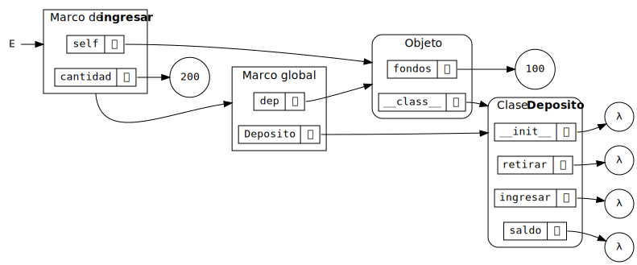

Programación orientada a objetos (I)
Ricardo Pérez López
IES Doñana, curso 2025/2026
1 Introducción
1.1 Recapitulación
Recordemos lo que hemos aprendido hasta ahora:
La abstracción de datos nos permite definir tipos de datos complejos llamados tipos abstractos de datos (TAD), que se describen únicamente mediante las operaciones que manipulan esos datos y con independencia de su implementación.
Las funciones pueden tener estado interno usando clausuras, que se crean a partir de funciones locales, funciones de orden superior y variables no locales.
Una función puede representar un dato.
Un dato puede tener estado interno, usando el estado interno de la función que lo representa.
Además:
El paso de mensajes agrupa las operaciones que actúan sobre ese dato dentro de una función que responde a diferentes mensajes despachando a otras funciones dependiendo del mensaje recibido.
La función que representa al dato encapsula su estado interno junto con las operaciones que lo manipulan en una única unidad sintáctica que oculta sus detalles de implementación.
En conclusión:
Una función puede implementar todo un tipo abstracto de datos.
1.2 Objetos
Al principio, distinguíamos entre funciones y datos: las funciones realizan operaciones sobre los datos y éstos esperan pasivamente a que se opere con ellos.
Cuando empezamos a representar a los datos con funciones, vimos que los datos también pueden encapsular comportamiento.
Esos datos ahora representan información, pero también se comportan como las cosas que representan.
Por tanto, los datos ahora saben cómo reaccionar ante los mensajes que reciben cuando el resto del programa les envía mensajes.
Esta forma de ver a los datos como objetos activos que interactúan entre sí y que son capaces de reaccionar y cambiar su estado interno en función de los mensajes que reciben, da lugar a todo un nuevo paradigma de programación llamado orientación a objetos o Programación Orientada a Objetos (POO).
Definición:
La programación orientada a objetos (POO) es un paradigma de programación en el que los programas se ven como formados por entidades llamadas objetos que recuerdan su propio estado interno y que se comunican entre sí mediante el paso de mensajes que se intercambian entre ellos con la finalidad de:
cambiar sus estados internos,
compartir información y
solicitar a otros objetos el procesamiento de dicha información.
Los pilares fundamentales de la POO son los siguientes:
Abstracción.
Encapsulación.
Herencia.
Polimorfismo.
Los objetos tienen:
Identidad.
Estado.
Comportamiento.
La programación orientada a objetos (también llamada POO, o bien OOP, del inglés Object-Oriented Programming) es un método para organizar programas que reúne muchas de las ideas vistas hasta ahora.
Al igual que las operaciones en las abstracciones de datos, los objetos imponen barreras de abstracción entre el uso y la implementación de los datos.
Al igual que los diccionarios y funciones de despacho, los objetos responden a peticiones que otros objetos les hacen en forma de mensajes para que se comporten de determinada manera.
Los objetos tienen un estado interno local al que no se debería acceder directamente desde el exterior de los mismos, sino únicamente por medio de las operaciones que proporciona el objeto.
A efectos prácticos, por tanto, los objetos son datos abstractos.
El sistema de objetos de Python proporciona una sintaxis cómoda para promover el uso de estas técnicas de organización de programas.
Gran parte de esta sintaxis es compartida con otros lenguajes de programación orientados a objetos.
Ese sistema de objetos ofrece algo más que simple comodidad:
Proporciona una nueva metáfora para diseñar programas en los que varios agentes independientes interactúan dentro del ordenador.
Cada objeto agrupa (encapsula) el estado local y el comportamiento de una manera que abstrae la complejidad de ambos.
Los objetos se comunican entre sí y se obtienen resultados útiles como consecuencia de su interacción.
Los objetos no sólo transmiten mensajes, sino que también comparten el comportamiento con otros objetos del mismo tipo y heredan características de otros tipos relacionados.
El paradigma de la programación orientada a objetos tiene su propio vocabulario que apoya la metáfora del objeto.
Ejercicio
- Investiga en Wikipedia los principales lenguajes orientados a objetos que existen en el mercado. ¿En qué año salieron? ¿Cuál influyó en cuál? ¿Cuáles son los más usados a día de hoy?
2 Conceptos básicos
2.1 Atributos
Los atributos o miembros de un objeto son los nombres asociados a un objeto que permiten acceder a sus características principales, es decir:
su estado y
su comportamiento.
Se puede acceder a los atributos de un objeto usando el operador punto (
.), indicando una referencia al objeto y el nombre del atributo al que se desea acceder:⟨objeto⟩
.⟨atributo⟩
Los objetos llevan asociado su propio espacio de nombres.
El proceso de localizar (si es que existe) la ligadura adecuada que liga, para un objeto concreto, a un nombre de atributo con su valor se denomina resolución del atributo, y es un proceso en el que participa el espacio de nombres del objeto pero posiblemente también otros.
Esto permite que pueda haber atributos distintos con el mismo nombre en objetos distintos.
Existen cuatro tipos principales de atributos:
Datos (campos): representan el estado interno del objeto.
Variables.
Constantes.
Comportamiento: representan el comportamiento del objeto, es decir, qué puede hacer el objeto o qué mensajes puede recibir.
Funciones del objeto.
Métodos.
Atributos de datos (campos):
Representan el estado interno del objeto.
Pueden ser variables o constantes.
Normalmente, las variables se almacenan dentro del objeto (en su espacio de nombres), pero las constantes suelen guardarse en un espacio de nombres común a todos los objetos del mismo tipo.
Atributos de función:
Son funciones almacenadas dentro del objeto, por lo que sus ligaduras se guardan en su espacio de nombres.
Actúan como cualquier otra función y se invocan como tal.
Atributos de métodos:
Son funciones que se invocan sobre el objeto, como un argumento destacado.
NO están almacenados dentro del objeto, ya que el comportamiento suele ser el mismo entre todos los objetos del mismo tipo, por lo que se almacenan en otro espacio de nombres común a todos los objetos del mismo tipo.
2.2 Clases
- Una clase es una construcción sintáctica que los lenguajes de programación orientados a objetos proporcionan como azúcar sintáctico para implementar tipos abstractos de datos de una forma cómoda y directa sin necesidad de usar funciones de orden superior, estado local o diccionarios de despacho.
En programación orientada a objetos:
Se habla siempre de clases y no de tipos abstractos de datos.
Una clase es la implementación de un tipo abstracto de datos.
Las clases definen nuevos tipos de datos de pleno derecho en el lenguaje de programación.
- Recordemos el ejemplo del tema anterior en el que implementamos el tipo abstracto de datos Depósito mediante la siguiente función:
def deposito(fondos):
def retirar(cantidad):
nonlocal fondos
if cantidad > fondos:
return 'Fondos insuficientes'
fondos -= cantidad
return fondos
def ingresar(cantidad):
nonlocal fondos
fondos += cantidad
return fondos
def saldo():
return fondos
def despacho(mensaje):
if mensaje == 'retirar':
return retirar
elif mensaje == 'ingresar':
return ingresar
elif mensaje == 'saldo':
return saldo
else:
raise ValueError('Mensaje incorrecto')
return despacho- Ese mismo TAD se puede implementar como una clase de la siguiente forma:
class Deposito:
def __init__(self, fondos):
self.fondos = fondos
def retirar(self, cantidad):
if cantidad > self.fondos:
return 'Fondos insuficientes'
self.fondos -= cantidad
return self.fondos
def ingresar(self, cantidad):
self.fondos += cantidad
return self.fondos
def saldo(self):
return self.fondos- En el momento en que se ejecute esta definición, el intérprete
incorporará al sistema un nuevo tipo llamado
Deposito.
- Más tarde estudiaremos los detalles técnicos que diferencian ambas
implementaciones, pero ya apreciamos que por cada operación sigue
habiendo una función (aquí llamada método), que
desaparece la función
despachoy que aparece una extraña función__init__.
Podemos usar docstrings para documentar tanto la propia clase como los métodos de la misma:
class Deposito: """ Un depósito del banco. """ def __init__(self, fondos): """Crea un depósito con una cantidad de fondos.""" self.fondos = fondos def retirar(self, cantidad): """Retira una cantidad de dinero del depósito.""" if cantidad > self.fondos: return 'Fondos insuficientes' self.fondos -= cantidad return self.fondos def ingresar(self, cantidad): """Ingresa una cantidad de dinero en el depósito.""" self.fondos += cantidad return self.fondos def saldo(self): """Devuelve el saldo del depósito.""" return self.fondos- Por convenio, el docstring de una clase siempre se escribe usando el estilo multilínea, al igual que pasa con los módulos.
La definición de una clase es una estructura sintáctica que crea un espacio de nombres y determina su propio ámbito.
Esa definición está formada por un bloque de sentencias que se ejecutarán dentro de ese ámbito en el momento en que el intérprete ejecute la definición:
class⟨nombre⟩:
⟨sentencia⟩^+Todas las definiciones que se realicen directamente en el ámbito de la clase como consecuencia de ejecutar su bloque de sentencias, serán locales a la clase y se almacenarán en el espacio de nombres de la clase, ya que, durante la ejecución del bloque de sentencias, el espacio de nombres actual es el espacio de nombres de la clase.
Los elementos así definidos y almacenados directamente en el espacio de nombres de la clase se denominan miembros o atributos de la clase.
Las funciones que son miembros de una clase se denominan métodos de la clase.
Por ejemplo, las funciones
__init__,retirar,ingresarysaldopertenecen a la claseDepositoy sólo existen dentro de ella (son locales a la clase), porque sus definiciones se almacenan en el espacio de nombres de la clase.Ese espacio de nombres es un marco que se almacena en la pila mientras se ejecuta la definición de la clase, y que formará parte del entorno mientras dure esa ejecución.
Cuando se termina de ejecutar la definición de la clase, se saca ese marco de la pila y se convierte en un objeto que almacena en forma de atributos a los miembros de esa clase.
Por tanto, ese objeto acaba almacenando el espacio de nombres de la clase y representando a dicha clase dentro del programa.
Recordemos que durante la definición de una función no se ejecuta su cuerpo, sino que simplemente se crea la ligadura entre el nombre de la función y la propia función.
Por tanto, al ejecutar la definición de una clase no se ejecutan los cuerpos de sus métodos.
Por ejemplo, en el código anterior:
class Deposito: def __init__(self, fondos): self.fondos = fondos def retirar(self, cantidad): if cantidad > self.fondos: return 'Fondos insuficientes' self.fondos -= cantidad return self.fondos def ingresar(self, cantidad): self.fondos += cantidad return self.fondos def saldo(self): return self.fondosEn la línea 10 tendríamos el siguiente entorno:


En general, no importa el orden en el que aparecen las definiciones dentro de la clase, salvo excepciones.
Ya sabemos que el cuerpo de una función (y recordemos que, aquí, las funciones se llaman métodos) no se ejecuta cuando se define la función, sino cuando se la llama. Por tanto, si un método usa a otro, no importará el orden en el que se hayan definido.
Por ejemplo, en el código anterior, los miembros se podrían haber definido en cualquier otro orden (
retirardespués desaldo,ingresarantes de__init__…, da igual).En cambio, si hacemos una definición a partir de otra, el orden sí importará. Por ejemplo, aquí sí es importante que
holase defina antes quesaludo:
Como se dijo anteriormente, con las clases ocurre lo siguiente:
Al entrar en la definición de la clase, se crea un nuevo espacio de nombres en forma de marco en la pila, que contiene las definiciones que se van creando durante la ejecución de la clase.
Al salir de la definición de la clase, se saca el marco de la pila y con él se crea un objeto que acaba almacenando ese espacio de nombres, de forma que las ligaduras que contiene se convierten en atributos del objeto.
La clase acaba siendo un objeto más, almacenado en el montículo, que se ligará al nombre de la clase en el espacio de nombres donde se haya definido ésta (normalmente, el marco global).
Ese objeto «clase» permanecerá en memoria mientras exista, al menos, una referencia que apunte a él.
Si ejecutamos la anterior definición en el Pythontutor, observamos que se crea en memoria un objeto que, como cualquier otro objeto, contiene su propio espacio de nombres representado con una estructura similar al diccionario de despacho que creábamos antes a mano, el cual almacena los miembros de la clase como atributos del objeto, asociando el nombre de cada operación con la función (mejor dicho, con el método) correspondiente.
Ese objeto representa a la clase en la memoria durante la ejecución del programa, y se liga al nombre de la clase en el espacio de nombres actual (que normalmente será el marco global).

Deposito en
memoriaComo las clases son objetos, debemos usar el operador punto (
.) para acceder a un miembro de una clase, indicando la referencia a la clase (normalmente, su nombre) y el nombre del miembro al que se desea acceder:En realidad, todo lo que hemos dicho hasta ahora sobre la creación de clases y el acceso a sus miembros, es esencialmente el mismo mecanismo que se usa en la creación y uso de módulos.
Sin embargo, hay que tener cuidado, ya que las clases no funcionan exactamente igual que los módulos en lo que se refiere al entorno, como veremos luego en un apartado posterior.
2.2.1 Instancias
Un objeto representa un dato abstracto de la misma manera que una clase representa un tipo abstracto de datos.
Es decir: un objeto es un caso particular de una clase, motivo por el que también se le denomina instancia de una clase.
Un objeto es un dato que pertenece al tipo definido por la clase de la que es instancia.
También se puede decir que «el objeto pertenece a la clase» aunque sea más correcto decir que «es instancia de la clase».
El proceso de crear un objeto a partir de una clase se denomina instanciar la clase o instanciación.
En un lenguaje orientado a objetos puro, todos los datos que manipula el programa son objetos y, por tanto, instancias de alguna clase.
Existen lenguajes orientados a objetos impuros o híbridos en los que coexisten objetos con otros datos que no son instancias de clases.
Python es considerado un lenguaje orientado a objetos puro, ya que en Python todos los datos son objetos.
Por ejemplo, en Python:
El tipo
intes una clase.El entero
5es un objeto, instancia de la claseint.
Java es un lenguaje orientado a objetos híbrido, ya que un programa Java manipula objetos pero también manipula otros datos llamados primitivos, que no son instancias de ninguna clase sino que pertenecen a un tipo primitivo del lenguaje.
Por ejemplo, en Java:
El tipo
Stringes una clase, por lo que la cadena"Hola"es un objeto, instancia de la claseString.El tipo
intes un tipo primitivo del lenguaje, por lo que el número5no es ningún objeto, sino un dato primitivo.
Las clases, por tanto, son como plantillas para crear objetos que comparten (normalmente) el mismo comportamiento y la misma estructura interna.
Los objetos tienen tres características básicas:
Identidad: un objeto se puede distinguir de otros.
Estado: un objeto tiene un estado interno que puede cambiar durante su vida.
Comportamiento: un objeto se comporta de cierta forma ante la recepción de ciertos mensajes.
En Python podemos instanciar una clase (creando así un nuevo objeto) llamando a la clase como si fuera una función, del mismo modo que hacíamos con la implementación funcional que hemos estado usando hasta ahora:
Lo que ocurre al ejecutar este código es lo siguiente:
Se crea en el montículo un objeto, instancia de la clase
Deposito, que contiene su propio espacio de nombres representado por una estructura con forma de diccionario.Se invoca al método
__init__sobre el objeto recién creado (ya hablaremos de ésto más adelante).La expresión
Deposito(100)devuelve una referencia al nuevo objeto, que representa, a grandes rasgos, la posición de memoria donde se encuentra almacenado el objeto (su identidad).Esa referencia es la que se almacena en la variable
dep. O sea: en la variable no se almacena el objeto en sí, sino una referencia al objeto.
En este ejemplo,
0x7fba5a16d978es la dirección de memoria donde está almacenado el objeto al que hace referencia la variabledep(es decir, su identidad):Cuando una variable contiene una referencia a un objeto, decimos que la variable se refiere al objeto o que apunta al objeto.
Aunque actualmente las referencias representan direcciones de memoria, eso no quiere decir que vaya a ser siempre así. Ese es un detalle de implementación basada en una decisión de diseño del intérprete que puede cambiar en posteriores versiones del mismo.
Esa decisión, en la práctica, es una cuestión que no nos afecta (o no debería, al menos) a la hora de escribir nuestros programas.
- Con Pythontutor podemos observar las estructuras que se forman al definir la clase y al instanciar dicha clase en un nuevo objeto:
class Deposito:
def __init__(self, fondos):
self.fondos = fondos
def retirar(self, cantidad):
if cantidad > self.fondos:
return 'Fondos insuficientes'
self.fondos -= cantidad
return self.fondos
def ingresar(self, cantidad):
self.fondos += cantidad
return self.fondos
def saldo(self):
return self.fondos
dep = Deposito(100)
Deposito y el
objeto dep en memoria- Se aprecia claramente que la clase almacena los métodos y la instancia almacena sus fondos, y todo son atributos.
Un objeto tiene existencia propia e independiente y permanecerá en la memoria siempre que haya al menos una referencia que apunte a él (en caso contrario, el recolector de basura lo eliminará).
De hecho, un objeto puede tener varias referencias apuntándole.
Por ejemplo, si hacemos:
tendremos dos variables que contienen la misma referencia y, por tanto, se refieren (o apuntan) al mismo objeto.
En ese caso, decimos que
dep1ydep2son idénticas, porque las identidades de los objetos a los que apuntan son iguales, cosa que podemos comprobar usandoidois:No olvidemos que las variables no contienen al objeto en sí mismo, sino una referencia a éste.
- Gráficamente, el caso anterior se puede representar de la siguiente forma:
dep1 y
dep2) que apuntan al mismo objetoRecordemos que en Python todos los tipos son clases.
Para saber la clase a la que pertenece el objeto, se usa la función
typeo el atributo__class__del objeto:Se nos muestra que la clase del objeto
depes__main__.Deposito, que representa la claseDepositodefinida en el módulo__main__.Esto demuestra que el objeto recuerda su clase (la clase que se usó para instanciarlo) porque lo guarda en un atributo.
Otra forma de comprobar si un objeto es instancia de una clase determinada es usar la función
isinstance(obj,cls), que devuelveTruesi el objeto obj es instancia de la clase cls:
2.3 Estado
Los objetos son datos abstractos que poseen su propio estado interno, el cual puede cambiar durante la ejecución del programa como consecuencia de los mensajes recibidos o enviados por los objetos.
Eso significa que los objetos son datos mutables.
Dos objetos no idénticos podrán tener estados internos distintos.
2.3.1 Variables de instancia
En terminología orientada a objetos, el estado de un objeto se almacena en variables denominadas variables de instancia, campos o propiedades del objeto (si bien, en Python el concepto de propiedad tiene un significado específico).
Esas variables de instancia se almacenan como atributos del objeto, dentro de éste, por lo que representan variables locales al objeto en su espacio de nombres.

dep y su atributo
fondosRecordemos que debemos usar el operador punto (
.) para acceder a un atributo del objeto a partir de una referencia suya usando la sintaxis:⟨objeto⟩
.⟨atributo⟩Por ejemplo, para acceder al atributo
fondos(que aquí es una variable de instancia) de un objetodepde la claseDeposito, se usaría la expresióndep.fondos:Y podemos cambiar el valor de la variable de instancia mediante asignación:
Por supuesto, dos objetos distintos pueden tener valores distintos en sus atributos, ya que cada atributo pertenece a un objeto determinado:

Deposito y los
objetos dep1 y dep2 en memoriaEn Python es posible acceder directamente al estado interno de un objeto (o, lo que es lo mismo, al valor de sus atributos) desde el exterior del mismo, cosa que, en principio, podría considerarse una violación del principio de ocultación de información y del concepto mismo de abstracción de datos.
Incluso es posible cambiar directamente el valor de un atributo desde fuera del objeto, o crear atributos nuevos dinámicamente, haciendo simplemente una asignación.
Todo esto puede resultar chocante para un programador de otros lenguajes, pero en la práctica resulta útil al programador por la naturaleza dinámica del lenguaje Python y por el estilo de programación que promueve.
Como cualquier variable en Python, un atributo empieza a existir en el momento en el que se le asigna un valor:
Por tanto, en Python, los atributos de un objeto se crean en tiempo de ejecución mediante una simple asignación.
Este comportamiento contrasta con el de otros lenguajes de programación (como Java, por ejemplo), donde los atributos de un objeto vienen determinados de antemano por la clase a la que pertenece y siempre son los mismos.
Así, en Java, dos objetos de la misma clase siempre tendrán las mismas variables de instancia, definidas por la clase (aunque la misma variable de instancia podrá tener valores distintos en los dos objetos, naturalmente).
Ese comportamiento dinámico de Python a la hora de crear atributos permite resultados interesantes imposibles de conseguir en Java, como que dos objetos distintos de la misma clase puedan poseer distintos atributos:
>>> dep1 = Deposito(100) >>> dep2 = Deposito(400) >>> dep1.uno = 'hola' # el atributo uno sólo existe en dep1 >>> dep2.otro = 'adiós' # el atributo otro sólo existe en dep2 >>> dep1.uno 'hola' >>> dep2.uno Traceback (most recent call last): File "<stdin>", line 1, in <module> AttributeError: 'Deposito' object has no attribute 'uno' >>> dep2.otro 'adiós' >>> dep1.otro Traceback (most recent call last): File "<stdin>", line 1, in <module> AttributeError: 'Deposito' object has no attribute 'otro'
- Con Pythontutor podemos observar lo que ocurre al instanciar dos objetos y crear atributos distintos en cada objeto:
class Deposito:
def __init__(self, fondos):
self.fondos = fondos
def retirar(self, cantidad):
if cantidad > self.fondos:
return 'Fondos insuficientes'
self.fondos -= cantidad
return self.fondos
def ingresar(self, cantidad):
self.fondos += cantidad
return self.fondos
def saldo(self):
return self.fondos
dep1 = Deposito(100)
dep2 = Deposito(400)
dep1.uno = 'hola'
dep2.otro = 'adiós'
Deposito y los
objetos dep1 y dep2 con distintos
atributos2.4 La antisimetría dato-objeto
Se da una curiosa contra-analogía entre los conceptos de dato y objeto:
Los objetos ocultan sus datos detrás de abstracciones y exponen las funciones que operan con esos datos.
Las estructuras de datos exponen sus datos y no contienen funciones (o, al menos, no las exponen).
Son definiciones virtualmente opuestas y complementarias.
3 Paso de mensajes
3.1 Resolución de atributos
Cuando se intenta acceder a un atributo de un objeto, lo que hace el intérprete es lo siguiente:
Primero busca dicho atributo dentro del objeto.
Si lo encuentra, devuelve su valor.
En caso contrario, lo busca en la clase del objeto.
Supongamos que tenemos el objeto
depde la claseDeposito.Si hacemos:
el intérprete devolverá el valor del atributo
fondosque encuentra en el objetodep, ya que el objeto contiene un atributo con ese nombre.En cambio, si hacemos:
el intérprete buscará primero el atributo
retiraren el objetodepy, al no encontrarlo allí, pasa a buscarlo en la claseDeposito. Ahí sí lo encuentra, así que devuelve su valor, que en este caso es un método.
Por tanto, lo anterior es casi equivalente a hacer:
Pero no es exactamente igual, ya que en el primer caso nos devuelve un método, mientras que en el segundo caso nos devuelve una función:
Esto no nos pilla de sorpresa, ya que sabíamos que
retirares un método para el objetodeppero es una función para la claseDeposito.
3.2 Ejecución de métodos
Como las clases implementan las operaciones como métodos, el paso de mensajes se realiza ahora invocando, sobre un objeto, el método correspondiente al mensaje que se enviaría al objeto.
Por ejemplo, si queremos enviarle el mensaje
saldoal objetodeppara saber cuál es el saldo actual de ese depósito, invocaríamos el métodosaldosobre el objetodepde esta forma:Si la operación requiere argumentos, se le pasarán al método también:
Ya tenemos que
retirares un método para el objetodepy que, por tanto,dep.retirarnos devuelve ese método.Pero, ¿qué ocurre cuando se invoca a un método sobre un objeto?
No es lo mismo hacer:
que hacer:
ya que en el primer caso obtenemos el valor del atributo (que es un método), pero en el segundo caso estamos invocando al método sobre el objeto.
Supongamos que o es una instancia de la clase C, que m es un método almacenado como un atributo de la clase C y que o no contiene ningún atributo que se llame m.
La ejecución del método m con argumentos a_1, a_2, \ldots, a_n sobre el objeto o tiene esta forma:
o
.m(a_1,a_2,\ldots,a_n)Pues bien: el intérprete de Python lo traduce por una llamada a función con esta forma:
C
.m(o,a_1,a_2,\ldots,a_n)Es decir: el intérprete llama a la función m definida en la clase C y le pasa automática e implícitamente el objeto o como primer argumento (el resto de los argumentos originales irían a continuación de o).
Esto nos vuelve a demostrar que los métodos no son más que una forma especial de función.
No olvidemos que quien almacena los métodos es la clase, no el objeto.
Por ejemplo, hacer:
equivale a hacer:
De hecho, el intérprete traduce el primer código al segundo automáticamente.
Esto facilita la implementación del intérprete, ya que todo se convierte en llamadas a funciones.
Para la clase
Deposito,retirares una función, mientras que, para el objetodep,retirares un método.Aunque son la misma cosa, el intérprete los trata de forma distinta según el contexto.
3.3 Definición de métodos
Esa es la razón por la que los métodos se definen siempre con un parámetro extra que representa el objeto sobre el que se invoca el método (o, dicho de otra forma, el objeto que recibe el mensaje).
Ese parámetro extra (por regla de estilo) se llama siempre
self, si bien ese nombre no es ninguna palabra clave y se podría usar cualquier otro.Por tanto, siempre que definamos un método, lo haremos como una función que tendrá siempre un parámetro extra que será siempre el primero de sus parámetros y que se llamará
self.
- Por ejemplo, en la clase
Deposito, obsérvese que todos los métodos tienenselfcomo primer parámetro:
class Deposito:
def __init__(self, fondos):
self.fondos = fondos
def retirar(self, cantidad):
if cantidad > self.fondos:
return 'Fondos insuficientes'
self.fondos -= cantidad
return self.fondos
def ingresar(self, cantidad):
self.fondos += cantidad
return self.fondos
def saldo(self):
return self.fondosEl método
saldode la claseDepositorecibe un argumentoselfque, durante la llamada al método, contendrá el objeto sobre el que se ha invocado dicho método:En este caso, contendrá el objeto del que se desea conocer los fondos que posee.
Por tanto, dentro de
saldo, accedemos a los fondos del objeto usando la expresiónself.fondos, y ese es el valor que retorna el método.Dentro del programa, la expresión
dep.saldo()se traducirá comoDeposito.saldo(dep).Es importante recordar que el parámetro
selfse pasa automáticamente durante la llamada al método y, por tanto, no debemos pasarlo nosotros o se producirá un error por intentar pasar más parámetros de los requeridos por el método.
El método
ingresartiene otro argumento además delself, que es la cantidad a ingresar:En este caso,
selfcontendrá el objeto en el que se desea ingresar la cantidad deseada.Dentro del método
ingresar, la expresiónself.fondosrepresenta el valor del atributofondosdel objetoself.Por tanto, lo que hace el método es incrementar el valor de dicho atributo en el objeto
self, sumándole la cantidad indicada en el parámetro.Por ejemplo, la expresión
dep.ingresar(35)se traducirá comoDeposito.ingresar(dep, 35). Por tanto, en la llamada al método,selfvaldrádepycantidadvaldrá35.
3.3.1 Entorno durante la ejecución de métodos
Durante la ejecución de un método en Python, el entorno no contiene ni la clase a la que pertenece el método ni el objeto sobre el que se invoca.
Es decir: los métodos no pueden considerarse clausuras, ya que no recuerdan el contexto en el que se definieron.
Por tanto, si un método quiere acceder a un miembro de cualquier clase (incluso de su misma clase), tendrá que hacerlo siempre a través de una referencia (con el operador
.), nunca directamente.
- Por tanto, un método puede llamar a otro, pero siempre a través de la referencia al objeto que recibe el mensaje, incluso aunque los dos métodos pertenezcan a la misma clase.
Por ejemplo, esto funcionará:
- El método
dosno está en el entorno del métodouno, así que no lo puede llamar directamente.
Por ejemplo: en el siguiente código, al invocar al método
unosobre el objetoade la claseA, se tienen los siguientes entornos antes y durante la invocación del método:El entorno del método no incluye a la propia clase
Ani al objeto sobre el que se invoca el método.

Como otro ejemplo, si recordamos la clase
Deposito:class Deposito: def __init__(self, fondos): self.fondos = fondos def retirar(self, cantidad): if cantidad > self.fondos: return 'Fondos insuficientes' self.fondos -= cantidad return self.fondos def ingresar(self, cantidad): self.fondos += cantidad return self.fondos def saldo(self): return self.fondos dep = Deposito(100) dep.ingresar(200)
Durante la ejecución del método
ingresar(digamos, en la línea 12 del código anterior), la situación en la memoria sería:
Y, por tanto, el entorno estaría formado por el marco de
ingresary el marco global, en ese orden.En consecuencia, ni la clase
Depositoni el objeto sobre el que se invoca el método (depoself, que son el mismo) están en el entorno del métodoingresar.
3.4 Métodos mágicos y constructores
En Python, los métodos cuyo nombre empieza y termina por
__se denominan métodos mágicos y tienen un comportamiento especial.En concreto, el método
__init__se invoca automáticamente cada vez que se instancia un nuevo objeto a partir de una clase.Coloquialmente, se le suele llamar el constructor de la clase, y es el responsable de inicializar el objeto de forma que tenga un estado inicial adecuado desde el momento de su creación.
Entre otras cosas, el constructor se encarga de asignarle los valores iniciales adecuados a los atributos del objeto.
Ese método recibe como argumentos (además del
self) los argumentos indicados en la llamada a la clase que se usó para instanciar el objeto.
Por ejemplo: en la clase
Deposito, tenemos:Ese método
__init__se encarga de crear el atributofondosdel objeto que se acaba de crear (y que recibe a través del parámetroself), asignándole el valor del parámetrofondos.¡Cuidado! No confudir la expresión
self.fondosconfondos. La primera se refiere al atributofondosdel objetoself, mientras que la segunda se refiere al parámetrofondos.
Cuando se crea un nuevo objeto de la clase
Deposito, llamando a la clase como si fuera una función, se debe indicar entre paréntesis (como argumento) el valor del parámetro que luego va a recibir el método__init__(en este caso, los fondos iniciales):La ejecución de este código produce el siguiente efecto:
Se crea en memoria una instancia de la clase
Deposito.Se invoca el método
__init__sobre el objeto recién creado, de forma que el parámetroselfrecibe una referencia a dicho objeto y el parámetrofondostoma el valor100, que es el valor del argumento en la llamada aDeposito(100).En la práctica, esto equivale a decir que la expresión
Deposito(100)se traduce a ref.__init__(100), donde ref es una referencia al objeto recién creado.La expresión
Deposito(100)devuelve la referencia al objeto.Esa referencia es la que se almacena en la variable
dep.
Ejercicio
- Comprobar el funcionamiento del constructor en Pythontutor.
En resumen: la expresión C
(a_1,a_2,\ldots,a_n)usada para crear una instancia de la clase C lleva a cabo las siguientes acciones:Crea en memoria una instancia de la clase C y guarda en una variable temporal (llamémosla ref, por ejemplo) una referencia al objeto recién creado.
Invoca a ref
.__init__(a_1,a_2,\ldots,a_n)Devuelve ref.
En consecuencia, los argumentos que se indican al instanciar una clase se enviarán al método
__init__de la clase, lo que significa que tendremos que indicar tantos argumentos (y del tipo apropiado) como espere el método__init__.En caso contrario, tendremos un error:
>>> dep = Deposito() # no indicamos ningún argumento cuando se espera uno Traceback (most recent call last): File "<stdin>", line 1, in <module> TypeError: __init__() missing 1 required positional argument: 'fondos' >>> dep = Deposito(1, 2) # mandamos dos argumentos cuando se espera sólo uno Traceback (most recent call last): File "<stdin>", line 1, in <module> TypeError: __init__() takes 2 positional arguments but 3 were givenEs importante tener en cuenta, además, que el constructor
__init__no debe devolver ningún valor (o, lo que es lo mismo, debe devolverNone), o de lo contrario provocará un error de ejecución.